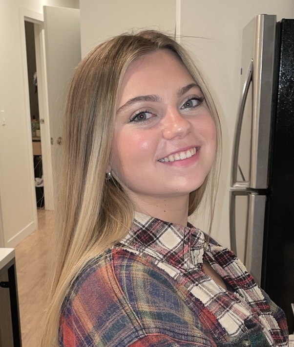

Marisa Beaudoin's Resume

Contact Information
Mobile: (248) 882-8103
Email: beaudo52@msu.edu
Alternate Email: risy.b@att.net
Education
Northville High School
Gradudated 2018
- - Cummulative GPA 3.4
- - Participated in JV Dance Team for two years
- - Particpated in Fleece and Thank you club
Michigan State University
August 2018 - May 2022 (expected graduation)
- - College of Communication Arts and Sciences
- - Senoir pursuing Bachelor of Arts Degree in Media & Information
- - Minor in Media Photography
- - Cummulative GPA: 3.0
Job History
Nanny
the Anderson Family
August 2016 - August 2017
- - Provided supervision & transportation for two children
- - Assistance with summer academic studies / Coordinating creative activities
Social Media Intern
Indusource, Inc. – Plymouth, MI
August 2018 - May 2020
- - Responsible for weekly social media posts on Instagram, Twitter and Facebook
- - Responsible for email marketing distribution as required
- - Assisted in corporate website e-commerce set-up – product photography and computer
input
Camp Counsler
City of Novi – Camp Powerplay
May 2019 - August 2019
- - Provided daily supervision for children aged 5-13 in team atmosphere
- - Responsible for creation of weekly themes and activities
- - Trained in first aid / CPR – responsible for health and safety of children
Receptionist
Meadowbrook Country Club – Northville, MI
June 2020 - August 2020
- - Greet and handle all member/visitor service requests at front desk reception (in person, telephone and email inquiries)
- - Database and records management, administrative support
- - Facility, event and dining planning and setup
- - Calendar and reservation management
Recruitment Intern
Lasalle Network ( Recruting Firm ) - Chicago, IL
June 2021 - August 2021
- - Responsible for handling 60+ phone calls a day
- - Responsible for interviewing perceptive workers
- - Responsible for emailing perspective workers
- - Responsible for updating the teams calander
- - Responsible for getting up to 10 people hired per week